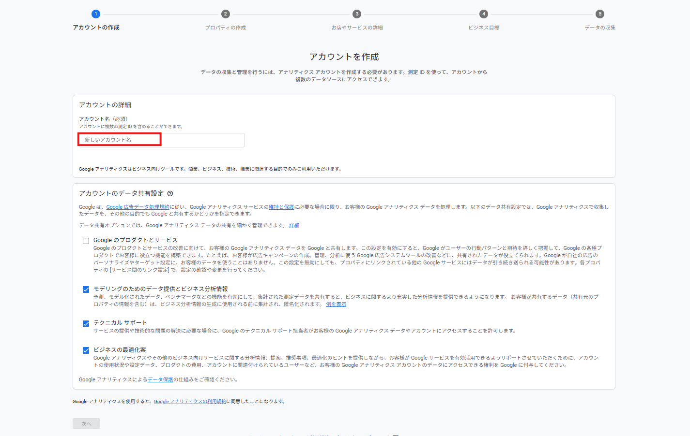
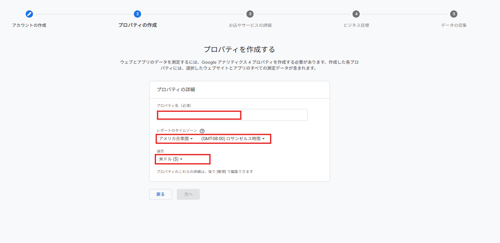

📖 このマニュアルについて
Google Analytics 4（GA4）の基本的な使い方をご説明します
Google Analytics 4（GA4）は、ウェブサイトへの訪問者数や流入経路を無料で分析できるツールです。
・リアルタイムで今サイトを見ている人の数を確認する方法
・過去のアクセス数を確認する方法
・訪問者がどこから来たか（Google検索、Instagram等）を確認する方法
🔐 ログイン方法
STEP 1: Google Analyticsにアクセス
以下のURLにアクセスしてください：
https://analytics.google.com/
STEP 2: Googleアカウントでログイン
納品時にお渡ししたGoogleアカウント（メールアドレスとパスワード）でログインしてください。
ログイン後、自動的にあなたのサイトのデータ画面が表示されます。
⚡ リアルタイム確認
今まさにサイトを見ている人の数を確認できます
STEP 1: 左メニューから「リアルタイム」をクリック
画面左側のメニューから「リアルタイム」を選択してください。
STEP 2: アクティブユーザー数を確認
画面左上に「過去30分のアクティブユーザー数」が表示されます。

・数字が「1」なら、今1人がサイトを見ています
・数字が「0」なら、今は誰も見ていません
・下のグラフで時間ごとの推移も確認できます
📈 基本データの見方
訪問者数やセッション数などの基本指標を確認できます
STEP 1: 左メニューから「レポート」を展開
画面左側のメニューから「レポート」をクリックして展開してください。
STEP 2: 「ユーザー獲得」→「概要」を選択
「ビジネス目標」→「ユーザー獲得」→「概要」の順にクリックしてください。
📊 主要指標の説明
新規ユーザー数
初めてサイトを訪れた人の数です。採用LPの場合、この数字が重要です。
セッション数
サイトへの訪問回数です。1人が複数回訪問すると、セッション数も増えます。
エンゲージメント率
サイトをしっかり見てくれた人の割合です。数字が高いほど、コンテンツに興味を持ってもらえています。
採用LPでは「新規ユーザー数」と「エンゲージメント率」を重点的に確認しましょう。
エンゲージメント率が50%以上あれば、良好です。
🚀 流入経路の確認
訪問者がどこから来たのかを確認できます
STEP 1: 「トラフィック獲得」を選択
「ユーザー獲得」の中にある「トラフィック獲得」をクリックしてください。
📊 主な流入経路の種類
Direct（直接）
URLを直接入力、またはブックマークからアクセスした人です。
Organic Search（自然検索）
Google検索で見つけてアクセスした人です。SEO対策の効果が表れます。
Social（ソーシャル）
Instagram、Facebook、LINEなどのSNSから来た人です。
Referral（参照元）
他のウェブサイトのリンクから来た人です。
・「Social」の数字が多い → SNS発信が効果的
・「Organic Search」が多い → Google検索で見つけられている
・どの経路が効果的かを見て、注力すべき施策を判断できます
❓ よくある質問
Q1. データが「0」のままです
A. まだ訪問者がいない可能性があります。サイトを公開したばかりの場合、数日〜数週間かかることがあります。SNSやチラシで積極的に告知しましょう。
Q2. データの反映にはどれくらい時間がかかりますか？
A. リアルタイムデータは数秒〜数分で反映されます。過去のデータは、最大24時間かかる場合があります。
Q3. スマホからも見られますか？
A. はい、スマホのブラウザから同じURLにアクセスすれば確認できます。「Google Analytics」アプリもあります。
Q4. どれくらいの頻度で確認すべきですか？
A. 週に1回程度で十分です。特に、SNS投稿やチラシ配布の後は確認すると効果が分かります。
Q5. もっと詳しく分析したい場合は？
A. お気軽にご相談ください。カスタムレポートの設定や、詳細な分析方法をサポートいたします。
不明な点がございましたら、お気軽にLINEでご相談ください。
画面を見ながらサポートさせていただきます。